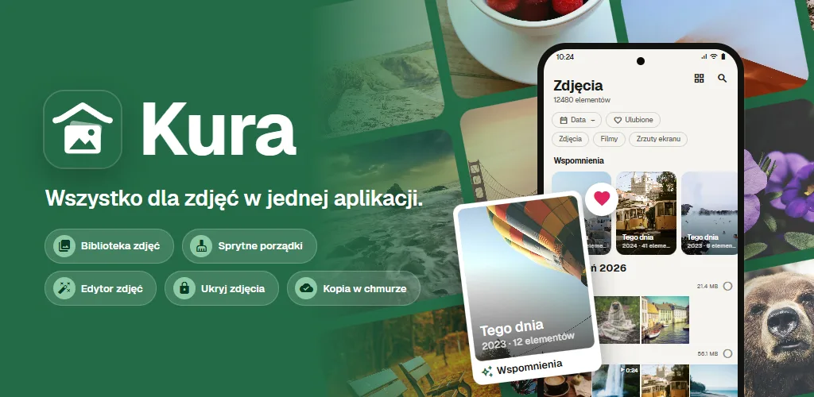
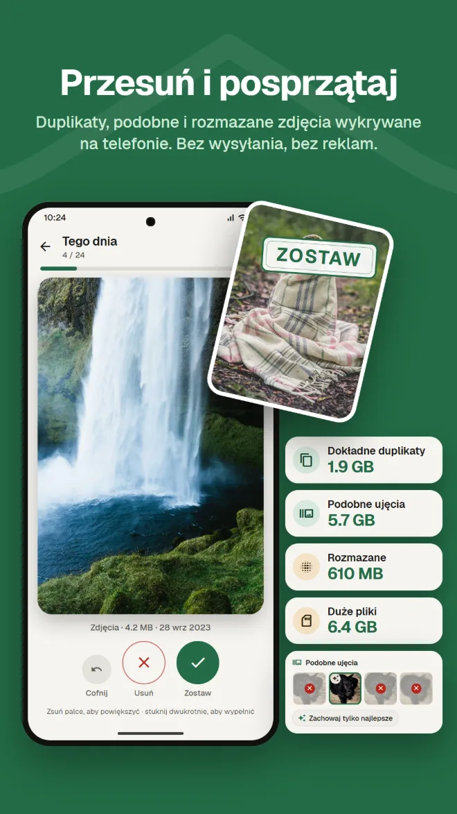
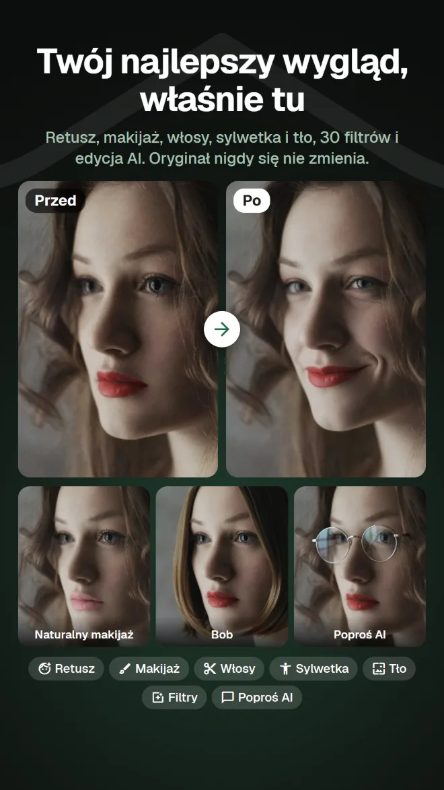
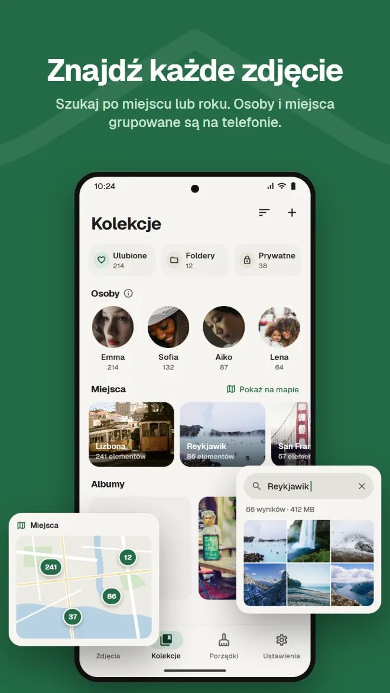
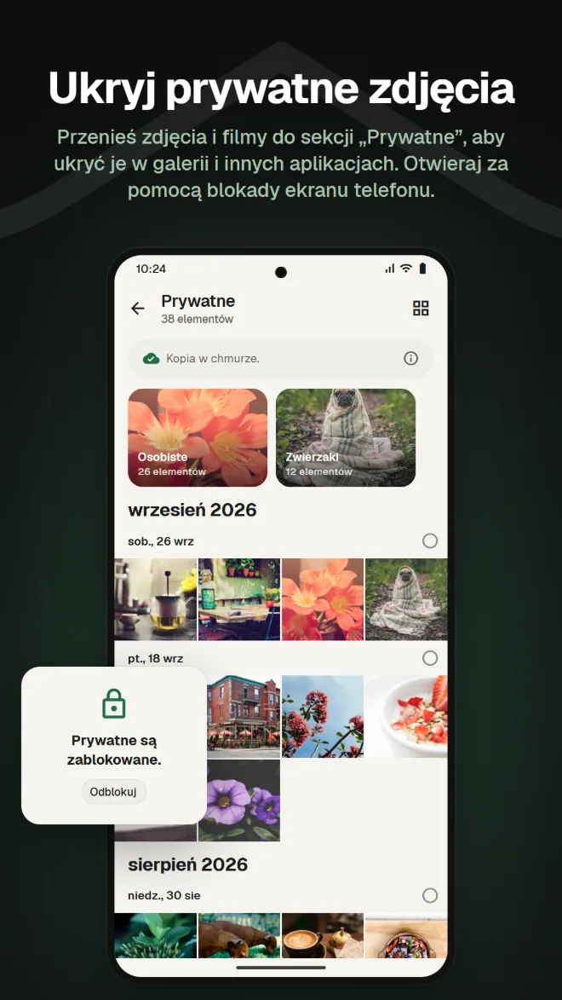
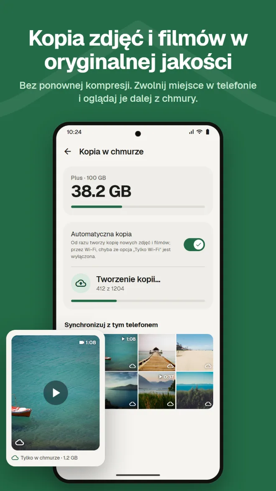
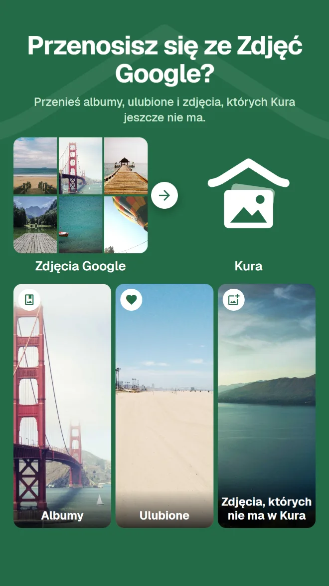

Szukaj po zawartości
Znajduj zdjęcia według miejsca, tego, co na nich jest, lub tekstu na zdjęciu.
Galeria, porządki, edycja AI, prywatne miejsce, kopia zapasowa i przenoszenie ze Zdjęć Google. Z Kura nie potrzebujesz osobnej aplikacji do każdej z tych rzeczy.
Android 11 lub nowszy · Przeglądanie, porządkowanie i usuwanie za darmo · Logowanie przez Google

Galeria do oglądania, aplikacja czyszcząca do zwalniania miejsca, kolejna do edycji, jeszcze inna usługa do kopii. Przy każdej zmianie znowu szukasz tego samego zdjęcia.
Kura robi to wszystko w jednej bibliotece.
Oglądaj, porządkuj, edytuj i kopiuj do chmury te same zdjęcia w jednym miejscu.
Od biblioteki przez porządki, edycję i przenoszenie po kopię zapasową.
Kura znajduje na telefonie dokładne duplikaty, podobne zdjęcia, rozmazane ujęcia i duże pliki. W prawo, aby zostawić, w lewo, aby wyrzucić do kosza – i od razu widzisz, ile miejsca zwolnisz.

Retusz, kształt, makijaż, włosy i tło, a do tego 30 filtrów, korekty i kadrowanie. Są filtry, dzięki którym jedzenie wygląda apetycznie, i narzędzia do całej sylwetki. Zawsze zapisujesz kopię, więc oryginał się nie zmienia.

Siatka według dat i wspomnienia z tego samego dnia w poprzednich latach. Szukaj według miejsca, tego, co jest na zdjęciu, lub tekstu na nim, a twarze są grupowane według osób na telefonie.

Przenieś zdjęcia i filmy do sekcji „Prywatne”, aby ukryć je w galerii i innych aplikacjach. Otwieraj za pomocą blokady ekranu telefonu.

Kopia zdjęć i filmów bez ponownej kompresji. Usuwaj z telefonu zdjęcia, które mają już kopię, aby zwolnić miejsce – nadal zobaczysz je w chmurze.

Wystarczy wysłać plik .zip z Google Takeout z aplikacji lub aplikacji webowej. Kura przeniesie albumy, ulubione i zdjęcia, których jeszcze nie ma. Serwer Kura rozpakowuje go w tle, więc możesz zamknąć aplikację i przeglądarkę.

Zdjęcia w chmurze Kura możesz oglądać, porządkować, sprzątać, edytować, udostępniać i przesyłać w aplikacji webowej – tak jak w aplikacji. Ulubione synchronizują się z aplikacją.
Otwórz aplikację webowąLogowanie przez Google · Po angielsku i japońsku
Wszystko, czego oczekujesz od galerii na co dzień.
Znajduj zdjęcia według miejsca, tego, co na nich jest, lub tekstu na zdjęciu.
Twarze grupowane według osób na telefonie, a Twoje zdjęcia na mapie.
Zdjęcia z tego samego dnia w poprzednich latach, na górze biblioteki.
Korekta jasności i kolorów, kadrowanie i pędzel, a także filtry do jedzenia.
Dodaj datę ważności i hasło, a potem wyślij osobom bez aplikacji.
Potwierdzaj blokadą ekranu przy każdym otwarciu. Możesz też ukryć sekcję „Prywatne”.
Zainstaluj, a Twoje zdjęcia pojawią się już uporządkowane.
Pobierz z Google Play (Android 11 lub nowszy)
Wybierz „Zezwól na wszystkie”, aby wczytać całą bibliotekę
Zaloguj się kontem Google
Porządkuj od razu, a kopię dodaj, gdy będzie potrzebna
Bez reklam. Płacisz tylko wtedy, gdy korzystasz z chmury.
Wszystko na telefonie
Płatne co miesiąc przez Google Play. Zrezygnuj w każdej chwili
Google Play pokazuje ceny w Twojej lokalnej walucie.
Zdjęcia opuszczają telefon tylko wtedy, gdy zrobisz coś, co wyraźnie je gdzieś wysyła.
Wykrywanie duplikatów, rozmazania, twarzy, obiektów i tekstu działa na telefonie. Żadne zdjęcie nie jest wysyłane do sortowania.
Android pyta przed usunięciem każdego pliku, a usunięte zdjęcia czekają w koszu, dopóki go nie opróżnisz.
Po zalogowaniu nasz serwer przechowuje tylko identyfikator Twojego konta Google. Twoje imię i adres e-mail nigdy nie są wysyłane.
Edycja AI wysyła tylko obszar wokół twarzy, a ani zdjęcie, ani wynik nie są przechowywane na serwerze.
Bez reklam · Przeglądanie, porządkowanie i usuwanie za darmo